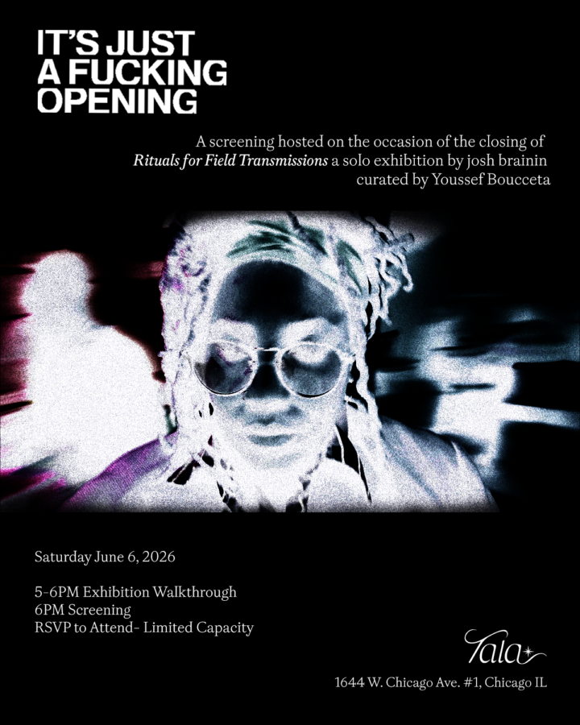

Screening: It’s Just a Fucking Opening
Join us for the closing program of 𝐑𝐢𝐭𝐮𝐚𝐥𝐬 𝐟𝐨𝐫 𝐅𝐢𝐞𝐥𝐝 𝐓𝐫𝐚𝐧𝐬𝐦𝐢𝐬𝐬𝐢𝐨𝐧𝐬 on Saturday, June 6, 5-7PM
To celebrate the closing, we are thrilled to host an exclusive screening of “Its Just a Fucking Opening” a short film by josh brainin, Camille Bacon, Youssef Boucetta which was filmed entirely at Tala
Originally premiering at the Chicago International Film Festival and screening at the MCA in 2025, this is the first time the short film will make its return to the gallery in which it was shot.
The film features Anisa (Ireon Roach), an up-and-coming artist who is woefully unprepared for the pettiness and performative antics taking place at the gallery opening for her latest pieces. Everything but the artwork seems to take center stage. When her absent girlfriend and career-oriented bestie focus on their own priorities, Anisa is left to spiral alone at the end of the night.
The screening will be prefaced by an exhibition walkthrough with artist/filmmaker josh brainin and curator Youssef Boucetta from 5-6PM. The film will be screened at 6PM and its run time is 18min. Very limited capacity – RSVP required to attend, link in bio 🔗
There will be a limited number of zines will be available for purchase 📕 celebratory drinks provided
Executive produced @jupiter.magazine
Starring Irwin Roach as Anisa (@ireon.jpg)